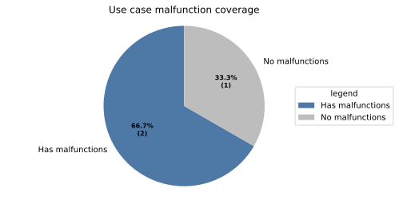
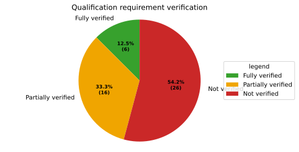

Doc-as-Code Tool Verification Report#
This page is the authoritative Tool Verification Report for the S-CORE Docs-as-Code tool. It records the classification of intended usage, potential malfunctions, safety impact and detection, together with qualification evidence and lifecycle state.
Tool under evaluation#
The S-CORE Docs-as-Code tool (Bazel module score_docs_as_code) builds HTML
documentation and traceability data from RST/Markdown sources. It evaluates
those sources with the S-CORE extensions and metamodel, and produces the
generated documentation, needs.json and metrics.json used by the
downstream process.
Report record#
Doc-as-Code
|
status: evaluated
|
||||
Conclusion#
Generated from linked report records.
The following values are generated on the doc_tool from its owned
potential_tool_malfunction records:
safety_affected: YESmeans that at least one owned malfunction is safety affected.tcl: LOWmeans that at least one safety-relevant malfunction has insufficient detection.Qualification is required because the generated
tclisLOW.
Tool verification graph#
Generated from linked report records.
---
config:
layout: elk
securityLevel: loose
---
flowchart LR
report["Tool Verification Report"]
requirements["Tool requirements"]
testcases["Passed fully-verifying testcases"]
testcases -->|fully verifies| requirements
click report href "#doc_tool__score_docs_as_code"
click requirements href "#tool-qualification-matrix"
click testcases href "#qualification-evidence"
usecase_1["Build/CI behavior"]
report --> usecase_1
click usecase_1 href "#tool_usecase__docs_as_code__build_ci"
usecase_1_malfunction_1["Listing assumptions of use"]
usecase_1 --> usecase_1_malfunction_1
click usecase_1_malfunction_1 href "#potential_tool_malfunction__docs_as_code__m7"
usecase_1_malfunction_1 -->|violates| requirements
usecase_1_malfunction_2["Test linkage"]
usecase_1 --> usecase_1_malfunction_2
click usecase_1_malfunction_2 href "#potential_tool_malfunction__docs_as_code__m5"
usecase_1_malfunction_2 -->|violates| requirements
usecase_1_malfunction_3["Test reference check"]
usecase_1 --> usecase_1_malfunction_3
click usecase_1_malfunction_3 href "#potential_tool_malfunction__docs_as_code__m6"
usecase_1_malfunction_3 -->|violates| requirements
usecase_1_malfunction_4["Document metamodel enforcement"]
usecase_1 --> usecase_1_malfunction_4
click usecase_1_malfunction_4 href "#potential_tool_malfunction__docs_as_code__m1"
usecase_1_malfunction_4 -->|violates| requirements
usecase_1_malfunction_5["Safety-critical linking enforcement"]
usecase_1 --> usecase_1_malfunction_5
click usecase_1_malfunction_5 href "#potential_tool_malfunction__docs_as_code__m2"
usecase_1_malfunction_5 -->|violates| requirements
usecase_1_malfunction_6["Requirements coverage statistics"]
usecase_1 --> usecase_1_malfunction_6
click usecase_1_malfunction_6 href "#potential_tool_malfunction__docs_as_code__m3"
usecase_1_malfunction_6 -->|violates| requirements
usecase_2["PR Review"]
report --> usecase_2
click usecase_2 href "#tool_usecase__docs_as_code__pr_review"
usecase_3["Derived-view"]
report --> usecase_3
click usecase_3 href "#tool_usecase__docs_as_code__derived_view"
usecase_3_malfunction_1["Backlinks"]
usecase_3 --> usecase_3_malfunction_1
click usecase_3_malfunction_1 href "#potential_tool_malfunction__docs_as_code__m8"
usecase_3_malfunction_1 -->|violates| requirements
usecase_3_malfunction_2["Documentation generation"]
usecase_3 --> usecase_3_malfunction_2
click usecase_3_malfunction_2 href "#potential_tool_malfunction__docs_as_code__m9"
usecase_3_malfunction_3["Architecture visualization"]
usecase_3 --> usecase_3_malfunction_3
click usecase_3_malfunction_3 href "#potential_tool_malfunction__docs_as_code__m4"
Evaluation overview#
Generated from linked report records.
Evaluation statistics#
Generated from linked report records.


Tool qualification matrix#
Generated from linked report records.
The qualification matrix contains only safety-relevant malfunctions whose
detection is insufficient. Every such malfunction must violate at least one
tool_req.
Malfunction |
Use case description |
Tool requirements (with testlinks) |
Tool requirements (without testlinks) |
|---|---|---|---|
Listing assumptions of use (Listing assumptions of use (potential_tool_malfunction__docs_as_code__m7)) |
Build/CI behavior |
||
Test linkage (Test linkage (potential_tool_malfunction__docs_as_code__m5)) |
Build/CI behavior |
||
Test reference check (Test reference check (potential_tool_malfunction__docs_as_code__m6)) |
Build/CI behavior |
— |
|
Document metamodel enforcement (Document metamodel enforcement (potential_tool_malfunction__docs_as_code__m1)) |
Build/CI behavior |
||
Safety-critical linking enforcement (Safety-critical linking enf... (potential_tool_malfunction__docs_as_code__m2)) |
Build/CI behavior |
||
Requirements coverage statistics (Requirements coverage stati... (potential_tool_malfunction__docs_as_code__m3)) |
Build/CI behavior |
— |
|
Backlinks (Backlinks (potential_tool_malfunction__docs_as_code__m8)) |
Derived-view |
— |
Qualification evidence#
Generated from linked report records.
Qualification is complete only when every relevant tool_req has a passed
testcase linked with fully_verifies. A partial verification remains useful
traceability evidence but does not by itself complete qualification.
Traceability evidence#
Generated from linked report records.
The evidence below keeps safety measures and generated testcase links visible for the qualification-relevant malfunctions.
Details#
Build/CI behavior
|
|||||||||||||||||||||||||||||||||||||||||||||||||||||||||||||||||||||||||||||||||||||||||||||||||||||||||||||||||||||||||||||||||||||||||||||||||||||
Builds run with
|
|||||||||||||||||||||||||||||||||||||||||||||||||||||||||||||||||||||||||||||||||||||||||||||||||||||||||||||||||||||||||||||||||||||||||||||||||||||
PR Review
|
|||||
Repository contents are the source of truth and every change is reviewed by a committer (rl__committer, doc_concept__wp_inspections). Still, for silent wrong outputs the gated CI stays green. |
|||||
Derived-view
|
|||||||||||||||||||||||||||||||||||||||||||||||||||||||||||||||||||||||||||||
The rendered HTML output is a derived view; the authoritative safety artifacts are mostly the source-controlled work products. There are two exceptions, the architecture views (see M4) and backlinks (see M8). Rendering/preview defects affect reviewer convenience, not safety evidence.
|
|||||||||||||||||||||||||||||||||||||||||||||||||||||||||||||||||||||||||||||
Security evaluation#
The threat model reduces to a single class: source tampering. The tool has no runtime attack surface — it is a build-time Sphinx extension reading source-controlled inputs and writing generated output.
Threat identification |
Use case description |
Threats |
Impact on security? |
Impact security measures available? |
Impact security detection sufficient? |
Further additional security measure required? |
|---|---|---|---|---|---|---|
T1 |
Source tampering — applies to all tool use cases.
|
An attacker with write access tampers with sources, configuration, or
extension code to weaken/disable security checks or inject misleading
content into published output.
|
yes |
yes: PR review. |
yes |
no |